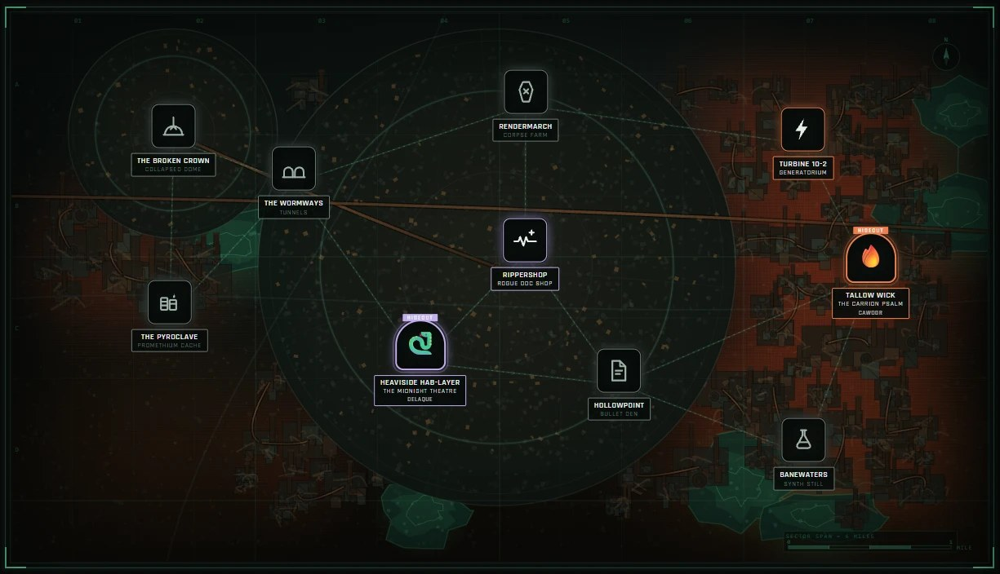
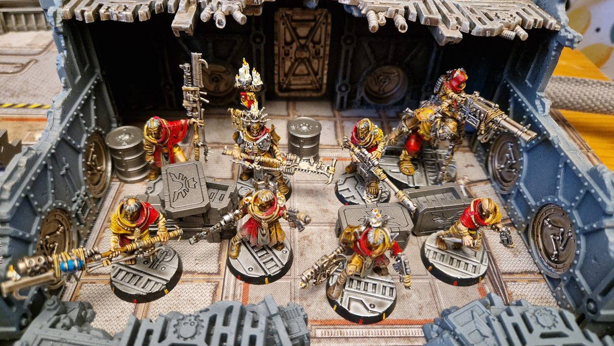
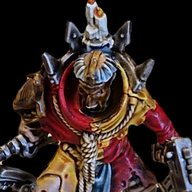
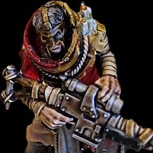
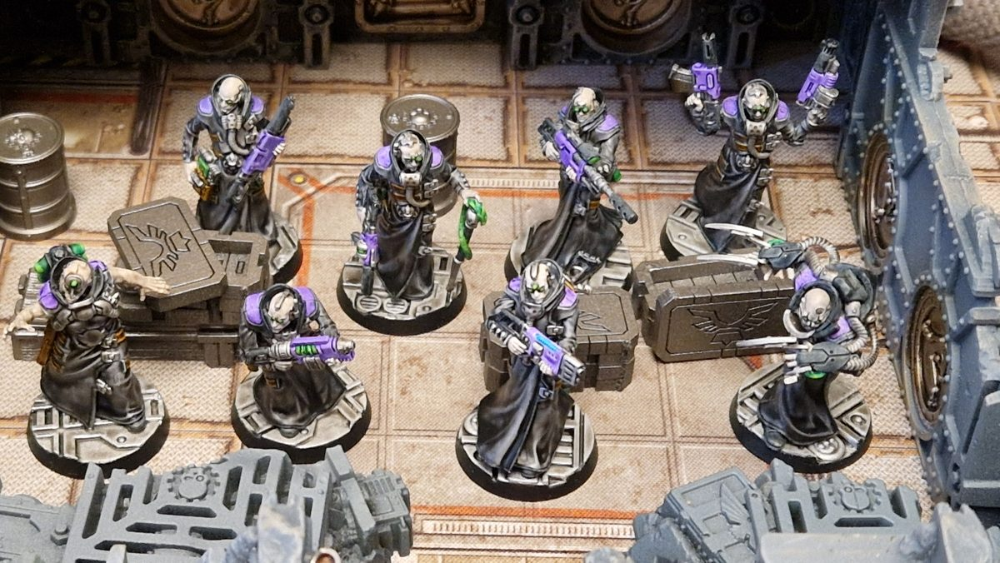
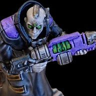
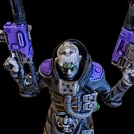
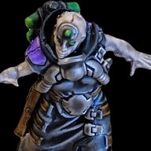

Tallow Wick
Settlement
Boons
- Income: 15 credits.
- Recruit: instead of income, recruit a Ganger for 25 credits less (minimum 0).
Battlefield effect
None
Ash and Shadow



Settlement
None
Generatorium
Power Glow: the Visibility (X") rule has no effect.
Settlement
None
Rogue Doc Shop
Supplies Everywhere: a fighter offering assistance adds two Injury dice instead of one.
Promethium Cache
Plentiful Promethium: improve Blaze (X+) by 1, so Blaze (5+) becomes Blaze (4+).
Synth Still
Toxic Vats: +1 AP for weapons with Toxin (X+).
Corpse Farm
Paid in Kind: gangs earn 10 credits for each enemy model they take Out of Action.
Bullet Den
Plentiful Ammo: once per round, each gang may make a Reload action as a Free action.
Tunnels
Twisting Tunnels: the Tunnel Warfare rule is in effect.
Collapsed Dome
Dangerous Footing: a natural 1 on an Agility test also inflicts a Str -, AP -, L1 hit that automatically Wounds with no saves.
House Cawdor


Cawdor Word Keeper (Leader, Pious)
Skills Inspiring, Nerves of Steel

Cawdor Firebrand (Champion, Pious)
Skills Bull Charge, Inspiring

Redemptionist Deacon (Champion, Fanatic)
Skills Inspiring, Rain of Blows

Cawdor Brethren (Ganger, Pious, Specialist), Gunner
Skills Hip-shooting

Cawdor Brethren (Ganger, Pious, Specialist), Medic
Skills Medicate

Cawdor Brethren (Ganger, Pious, Specialist), Sniper
Skills Precision Shot

Cawdor Bonepicker (Pious, Prospect)

Cawdor Stig-Shambler (Brute, Loner, Pious)
Skills Bulging Biceps, Juggernaut
House Delaque


Master of Shadow (Leader, Wyrd), Wyrd
Skills A Perfect Void, Counter-attack, Inspiring
Special rules Master of Whispers

Phantom (Champion)
Skills Inspiring, Overwatch
Special rules Master of Whispers

Nacht-Ghul (Champion, Loner)
Skills Inspiring, Spring Up
Special rules From the Shadows

Ghost (Ganger, Specialist), Gunner
Skills Hip-shooting

Ghost (Ganger, Specialist), Medic
Skills Medicate

Ghost (Ganger, Specialist), Gunner
Skills Hip-shooting

Ghost (Ganger, Specialist), Gunslinger
Skills Gunfighter

Psy-Gheist (Prospect, Wyrd)
Skills Eternal Slumber
Special rules Whispers in the Dark